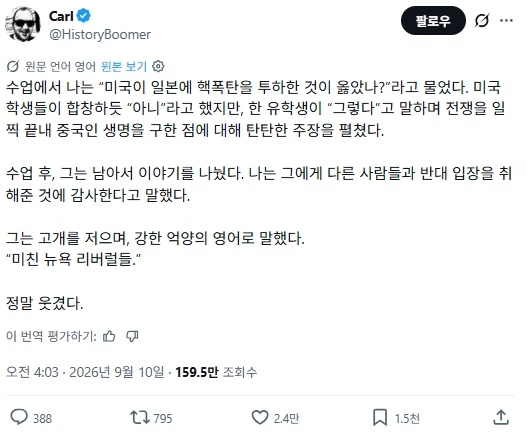

와
진짜 좀 이상하긴 하네

와
진짜 좀 이상하긴 하네
리버럴들이 사상적으로 좌파에 기울어있잖아
우리나라에서 자유라는 단어를 보수주의자들이 가져간거처럼 쟤네는 자유를 진보주의자들이 가져간듯
선이냐 악이냐로 따지면 악이지
근데 최악이냐 차악이냐로 따지면 차악이었던거고
마치 한국인한테 통일을 해야 하냐고 묻는거나 다름없는 거임
난징에서 죽은 30만에 비해 히로시마와 나가사키에서 죽은 20만은 숫자 하나로 가치가 다른가? 직접 카타나로 베어 죽인 것보다 버튼 하나 눌러서 죽인 것은 다른가? 볼트와 나사를 만든 국민들에게 과연 선택지가 있었나?
하지만 핵 두방이 아니였으면 수백만은 더 죽었는걸
전쟁을 끝내야 했으니까
하지만 전쟁을 끝낸건 핵두방이었지
난징 대학살이 아니었음
이새끼가 우물에 독을 풀었다 찢어죽여
리버럴리스트가 다 좌파는 아니에요.
미국에서는 리버럴이 좌파로 쓰임
본토 상륙 작전 들어갔으면 일본 군부가 협상 어떻게든 고점 잡을려고 민간인이던 뭐던 갈아 넣었을 꺼고 거기다 시간 끌려서 소련 까지 참전해서 미국과 땅따먹기 경쟁 시작 한다?
일본 이새끼들은 버튼 누른 미국 에게만 지랄 하지만 모든 원흉과 죄는 일본 천왕과 군부에게 있지 근데 그새끼들에게는 말한마디 하냐?

원본은 뭐라고 되어 있는지 모르지만 저 말을 한 사람이 중국인 이라는건 어디에 나와있는걸까?
그냥 중국인을 구했다라는 말을 했기 때문에 중국인이라는 추론인건가.
너 리버럴 뜻 모르지?
미국에선 리버럴이 좌파 맞음
애초에 세상은 좌우로 나눌수 없음
저런식으로 따지면 2차대전은 극우 히틀러 대 좌파 루즈벨트의 전쟁이게? ㅋㅋㅋ
중국인이 미국인 마음을 이해할 순 없지
미국인은 미국이 일본에 쓴 것과 정확히 같은 논리로 세상 모든 나라가 '미국인들은 전쟁용 AI 데이터센터를 돌리는데 일조하니까 민간인과 군인이 구분되지 않는다'이러면서 핵폭탄 갈겨버릴 단초를 제공했으니까 올바르지 않은 일이었다고 생각하는 거고
중국인은 항상 그정도는 감안하고 살기 때문에 그냥 다 죽이죠?에 찬성하는 거고
그 작전명 몰락했으면 진짜 몰락할뻔했는데 원폭으로 끝난게 오히려 더 괜찮은 미래 아닌가
옳진 않지만 해야 했는지
아니면 하지 말았어야 하는지를 정확하게 물어봤어야됨
전자라면 투하에 동의한거나 마찬가지고
후자라면 무슨 대안을 제시할 수 있는지 물어보고
제안할 대안이 없다거나 택도없는 소리하면 걍 병신이니 더 말섞을 필요 없음
크레이즤 뻐킹 리버럴
떨궜어야 했어
기왕이면 한방 더 했어야 했는데
제국주의에 대해 투명하게 가르치라
백인 좌파들 병신짓이 하도 독해서 그걸 가리키는 baizuo(백좌)라는 중국어 표현이 따로 있을 정도.
리버럴이 왜 좌파야?